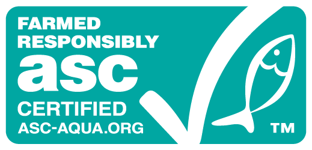

Certificaciones de Calidad Internacional
Conoce las normas y certificaciones que respaldan la calidad de sus productos.

La empacadora de mariscos "Grupo MACSA" se ha destacado como una de las empresas líderes en la industria, ofreciendo productos de alta calidad y un fuerte compromiso con la sostenibilidad y el medio ambiente. Conoce cómo han logrado ser un referente en exportaciones internacionales.
Conoce las normas y certificaciones que respaldan la calidad de sus productos.
La empacadora utiliza procesos innovadores para minimizar el impacto ambiental.
Descubre cómo esta empresa apoya a las comunidades costeras.